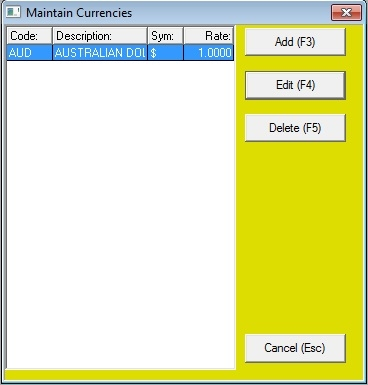

The currencies section of Bookscan allows for you to maintain the different currencies you can use within the system, such as applying a foreign currency to a supplier.
To maintain suppliers on the main menu click on Tables,then point to Authority Tables and then click on Currencies

Add
To add a new currency, click on the Add button.
Enter the following:
Currency Code (2 characters)
Currency Name (20 characters)
Currency Symbol (1 character)
Currency exchange Rate (to local currency)
Click the OK button.
Edit
To edit an existing currency click on the currency and click the Edit button
You can make changes to:
Currency Name (20 characters)
Currency Symbol (1 character)
Currency exchange Rate (to local currency)

Click the OK button.
Delete
To delete an existing currency click on the currency and click the Delete button
Next click the OK button, and then click the Yes button.
Close
To exit the currencies section, click this button.